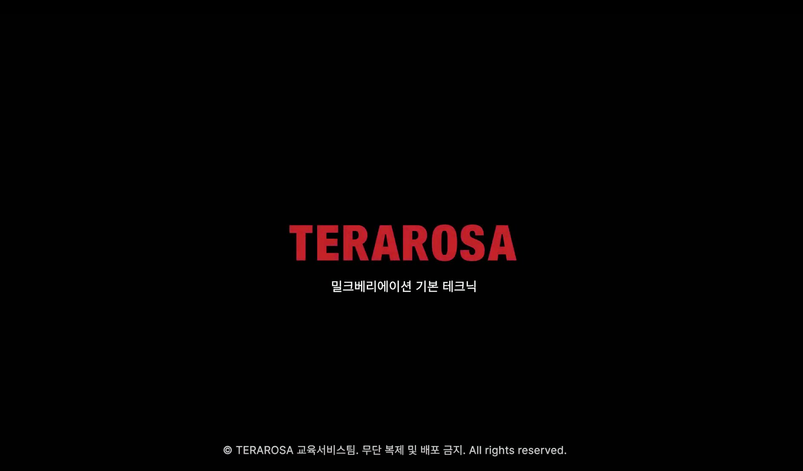

Selected Cases
정의하고, 직접 만들고,
조직에 스며들게 했습니다.
Culture & Identity
01
우리다운 것이
흐려지기 전에

전사에 '우리다운 것'이 무엇인지, 정의조차 없었습니다. 문화는 리더가 바뀔 때마다 조금씩 다르게 전달되고 있었습니다.
- 브랜드 매뉴얼북 집필 (0→1) — 핵심 가치와 일하는 방식을 처음으로 문서화
- 사내 소식지 직접 구축 — 웹 기반으로 단독 제작 후 팀에 이관
- 호칭 '님' 단일화 캠페인 — 경영진과 협업, 온보딩 전반에 내재화

직접 기획·집필한 통합 매뉴얼북 (좌) / HTML·CSS로 구축한 사내 소식지 (우)
298p
브랜드 매뉴얼북
단독 기획·집필
단독 기획·집필
0→1
전사 핵심 가치
최초 문서화
최초 문서화
추상적으로 떠돌던 가치가 책 한 권과 웹 소식지라는 실체가 되어 온보딩 커리큘럼의 뼈대로 자리 잡았고, 수동적이던 현장에 수평적 커뮤니케이션 문화가 안착했습니다.
Onboarding Experience
02
10개월이
4개월이 된 이유

입사 첫 3개월은 조직을 처음 배우는 시간입니다. 그런데 그 경험이 배치 매장마다 완전히 달랐습니다.
- 순환 온보딩 설계 — 집체 교육을 3-3-2 현장 순환 구조로 전환
- 리더십 패러다임 전환 — 리더를 '지시자'에서 '코치'로 재정의
- 온보딩 사이트 단독 구축 — 트래커·퀴즈·평가를 HTML/CSS/JS로
신규 입사자를 위한 온보딩 사이트 (직접 개발)
60%
현장 독립 기간 단축
10개월 → 4개월
10개월 → 4개월
97%
신규 입사자
소프트랜딩
소프트랜딩
124%
온보딩 KPI
초과 달성
초과 달성
개편 전 연간 99명이던 온보딩 규모를 2025년 209명으로 2.1배 확대했습니다. 사람이 두 배로 늘어도 신규 입사자가 받는 첫 경험의 질이 흔들리지 않는다는 뜻입니다.
70'22
75'23
99'24
209'25
150'26
연도별 온보딩 교육 인원 (명) · 2025년 체계 개편으로 월 1회 → 2회 채용 전환 · '26년은 7월 현재 진행 중
Enablement & Systems
03
배움이
반복 가능하려면


파편화된 부서 공지, 리더마다 다른 기준. 현장에는 일관된 규칙이 없었습니다.
- 미디어 기반 직무 교육 체계 (0→1) — Premiere Pro를 독학해 12편의 직무 교육 영상을 단독 기획·촬영·편집했습니다. 이를 인정받아 2026년 전사 시무식 영상 제작도 전담했습니다.
- 통합 직무 매뉴얼 단독 집필 — 전 부서의 실무 기준을 처음부터 집대성하고, 신규 리더의 빠른 적응을 위한 점장 매뉴얼북 제작에도 참여했습니다.
- 셀프서브 기술 가이드북 (0→1) — 현장직 비율이 높아 집합교육이 어려운 조직을 위해 GitHub·VS Code·웹 제작법을 담은 HTML 가이드북을 만들어 배포했습니다. 이를 읽은 동료가 엑셀로 공유하던 데이터를 웹 대시보드로 직접 만들어 쓰기 시작했습니다.
- 순환형 학습 구조 정착 — 배포에 그치지 않고 현장 피드백을 실시간으로 수렴해 즉각 업데이트하는 애자일 콘텐츠 운영 구조를 만들었습니다.
Premiere Pro 독학으로 제작한 직무 교육 영상 (좌) / 셀프서브 기술 가이드북 (우)
대규모 신규 합류에도 동일한 교육 품질이 유지되는 반복 가능한 성장 구조를 직접 증명해 냈습니다. 배운 사람이 다시 만드는 사람이 되는 것 — 그것이 제가 정의하는 교육의 완성입니다.